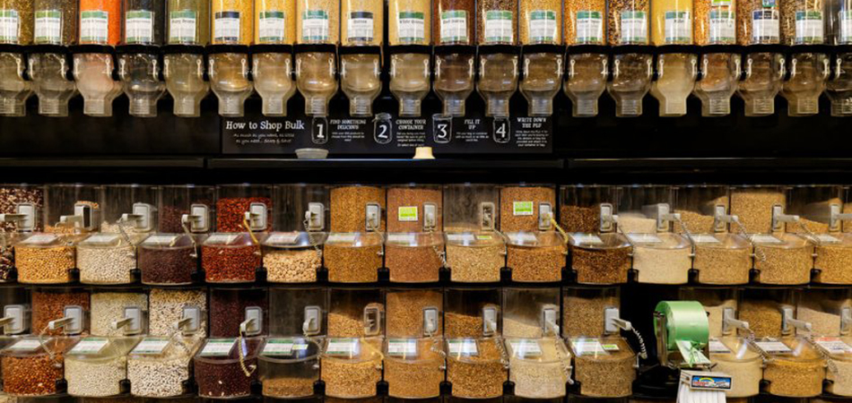
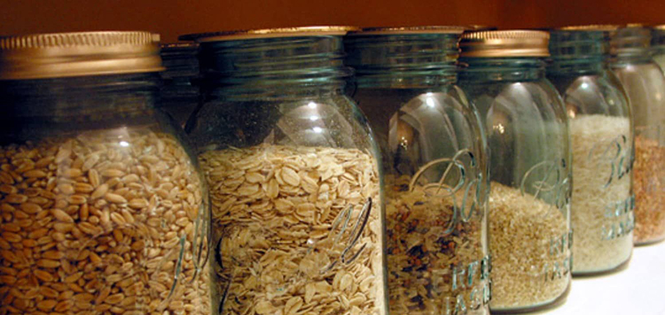
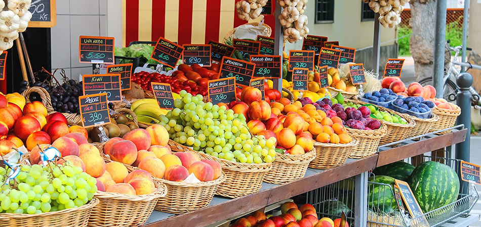
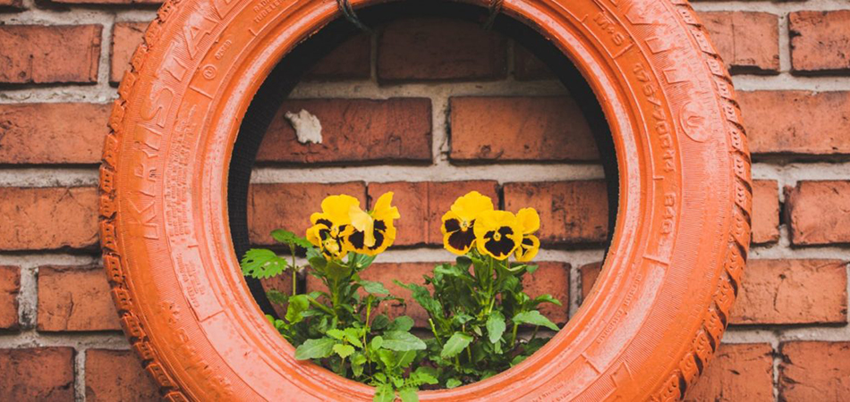
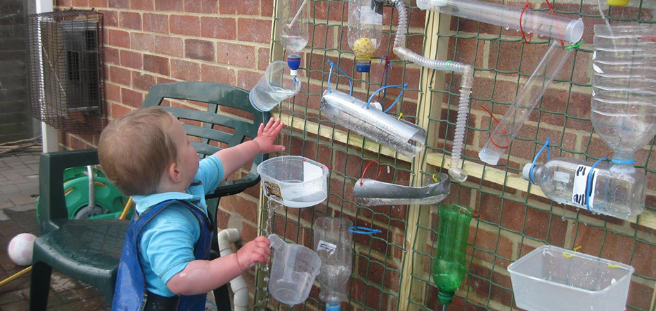
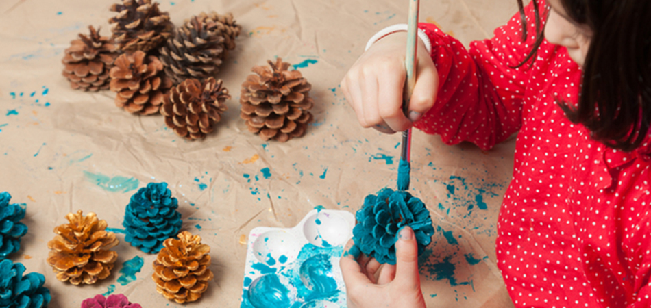
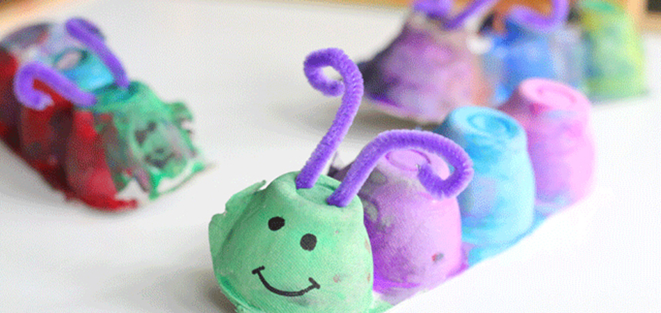

When chosing what to buy at the grocery store, take the amount of packaging waste into consideration. The least wasteful option is to start by picking out everything that you need from the produce section and thbe bulk foods section. Then, if there is anything else that you need, consider if you are able to make it from scratch using a few ingredients or if you have to buy it ready-made.The bottom line is that reusable jars are essential to reducing your waste. Shopping bulk foods will not make an environmental difference if you continue using the flimsy single-use plastic bags to pack your grains, nuts and flours. Either bring empty jars with you to the store or purchase reusable cloth bags to transport your bulk foods home so that you can pour them into jars. Depending on where you live, there will be both locally grown and globally grown foods available for you to buy. Local grown fruit, if grown outdoors and in-season, uses significantly less energy to bring to our tables than the growth and shipping of that same fruit from a different part of the world. Not only is the produce at your local Farmer's Market fresher and jucier, supporting local farms plays an important role in reducing the amount of energy that we use to bring food to our community.When you're re-decorating your home, consider building some DIY furniture using left-over materials. This fun lounging set is build out of used shipping pallets and even that manages to look cool! Imagine what you can come up with using more fancy materials. Pinterest is a great place to gain inspiration.With a fresh coat of paint and a few living flowers, even mundane objects can become beautiful. Take a few minutes to browse the internet for DIY flower holders and you'll see that the opportunities are endless!Instead of throwing out your used bottles and containers, imagine ways that they can be repurposed, for functionality or for play. THis watter experiment wall is a fun craft to put together for your kids to play in during the hot summer months. Instead of buying expensive parts, these used plastic containers do the exact same job: spill water and create joy.Every holiday has it's associated decorations, but you don't have to buy them from the store. It's much more fun to make homemade decorations as a family bonding experience. Go out for a forest hike and give each family member a bag to collect fun natural trinkets such as rocks, acorns, twigs... and then come home and paint them, tie a string to them, and hang them up around the house.Family crafting is a nice way to spend time together and celebrate creativity. Here is a cute DIY caterpillar that is easy to make from an old egg carton, and there are countless other ways to create fun toys out of used cartons and other materials.